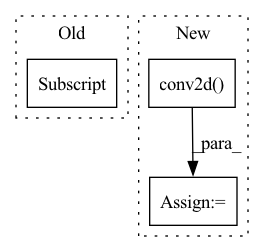

Pattern ID :26334
Before Change
for smap in saliency_maps:
sparse_feat = torch.sum(torch.abs(smap))
n_channels = smap.shape[0]
kernel = torch.tensor([[0., 1., 0.],
[1., -4., 1.],
[0., 1., 0.]])
kernel = kernel.view(1, 1, 3, 3).repeat(1, n_channels, 1, 1)After Change
def cal_explanation_feature(self, saliency_maps: torch.Tensor) -> float:
sparse_feats = saliency_maps.flatten(start_dim=1).norm(p=1) // (N)
smooth_feats = self.conv2d( saliency_maps) .flatten(start_dim=1).norm(p=1) // (N)
persist_feats = 0.0 // todo (N)
exp_feats = self.lambd_sp * sparse_feats + self.lambd_sm * smooth_feats + self.lambd_pe * persist_featsIn pattern: SUPERPATTERN
Frequency: 3
Non-data size: 3
Instances Fragment ID: 79078470
Project Name: ain-soph/trojanzoo
Commit Name: afe7bbd2d2e9f901ee8cf56c3b9320b9272a81af
Time: 2020-07-22
Author: ain-soph@live.com
File Name: trojanzoo/defense/backdoor/neuron_inspect.py
M Class Name: Neuron_Inspect
N Class Name: Neuron_Inspect
M Method Name: cal_explanation_feature(2)
N Method Name: cal_explanation_feature(2)
M Parent Class: Defense_Backdoor
N Parent Class: Defense_Backdoor
M File Name: trojanzoo/defense/backdoor/neuron_inspect.py
N File Name: trojanzoo/defense/backdoor/neuron_inspect.py
M Start Line: 68
M End Line: 84
N Start Line: 68
N End Line: 73
Before Change
// print(_v4e.shape) // torch.Size([n_objects, 512, 30, 57])
// print(_r3e.shape) // torch.Size([n_objects, 512, 60, 114])
// print(_r2e.shape) // torch.Size([n_objects, 256, 120, 228])
batch_list["k4e"] .append(_k4e)
batch_list["v4e"].append(_v4e)
batch_list["r3e"].append(_r3e)
batch_list["r2e"].append(_r2e)After Change
_r4t, _, _, _, _ = self.encoder_query(target_objects[i])
// print(_r4t.shape) // torch.Size([n_objects, 1024, 7, 7])
_correlation_r4 = F.conv2d( r4[i].unsqueeze(dim=0), _r4t, padding=3) .permute(1, 0, 2, 3)
// print(_correlation_r4.shape) // torch.Size([n_objects, 1, 30, 57])
k4, v4 = self.kv_query(torch.cat([_r4e, _correlation_r4], dim=1))
// print(k4.shape) // torch.Size([n_objects, 128, 30, 57]) Fragment ID: 79078467
Project Name: hzxie/rmnet
Commit Name: 69815437b1b170901900d8efd3933ae5b815c928
Time: 2020-04-28
Author: root@haozhexie.com
File Name: models/stm.py
M Class Name: STM
N Class Name: STM
M Method Name: segment(6)
N Method Name: segment(5)
M Parent Class: torch.nn.Module
N Parent Class: torch.nn.Module
M File Name: models/stm.py
N File Name: models/stm.py
M Start Line: 288
M End Line: 312
N Start Line: 278
N End Line: 317
Before Change
In order do be able to identify two fluorophores in adjacent pixels we look for
probablity values > 0.6 that are not part of the first mask.
p_ *= (1 - max_mask1[:, 0])
p_clip = torch.where(p_ > self.sep_th, p_, torch.zeros_like(p_))[:, None]
max_mask2 = torch.where(p_ > self.sep_th, torch.ones_like(p_), torch.zeros_like(p_))[:, None]
p_ps2 = max_mask2 * conv
This is our final clustered probablity which we then threshold (normally > 0.7) After Change
throw it away. One might think of a more sophisticated ambiguity handling.
// ToDo: I don"t know whether this is correct!
count_mask2 = torch.nn.functional.conv2d( max_mask2, filt, padding=1)
ambig_mask = torch.ones_like(count_mask2)
ambig_mask[ambig_mask >= 2 * self.sep_th] = 0.
max_mask2 *= ambig_mask
p_ps2 = max_mask2 * conv
Fragment ID: 79078474
Project Name: turagalab/decode
Commit Name: b33aa8ab6de9a909927e2f9d546597b68e765373
Time: 2019-08-30
Author: gitdev@LRM.photo
File Name: deepsmlm/neuralfitter/post_processing.py
M Class Name: SpeiserPost
N Class Name: SpeiserPost
M Method Name: forward_(3)
N Method Name: forward_(3)
M Parent Class:
N Parent Class:
M File Name: deepsmlm/neuralfitter/post_processing.py
N File Name: deepsmlm/neuralfitter/post_processing.py
M Start Line: 192
M End Line: 212
N Start Line: 209
N End Line: 231